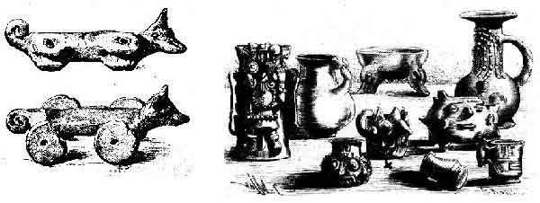

Es un volcán activo localizado en el centro de México, en los límites territoriales de los estados de Morelos, Puebla y México. Se localiza a unos 72 km al sureste de la Ciudad de México, 43 km de Puebla, 63 km de Cuernavaca, y 53 km de Tlaxcala.
Su altura es de 5500 msnm, es de forma cónica, tiene un diámetro de 25 km en su base y la cima es el corte elíptico de un cono y tiene una orientación noreste-suroeste. La distancia entre las paredes de su cráter varía entre los 660 y los 840 m.
En el Estado de México colinda con los municipios: Tlamanalco, Amecameca, Atlauta y Ecatzingo.
Con el estado de Morelos colinda específicamente con el municipio de Tetela del Volcán.
Por la parte de Puebla colinda con Huejotzingo, San Salvador el Verde, Domingo Arenas, San Nicolás de los Ranchos y Tochimilco

De apariencia casi simétrica, cubre una superficie de 283,192.53 hectáreas y tiene una altura de 5,426 metros sobre el nivel del mar. Posee un cráter elíptico de paredes empinadas con una profundidad de 150 metros desde el labio inferior, un diámetro mayor de 900 metros y un ancho total de 400 x 600 metros.

Además, existe una gran cantidad de registros desde la antigüedad sobre los periodos de actividad del volcán, e incluso está registrada una erupción en 1927, que fue artificialmente provocada por la dinamitación del cráter para extraer azufre del mismo.

Este gran estratovolcán andesítico–dacítico ocupa un área de 500 km2, presenta una compleja historia eruptiva. Su cráter tiene un diámetro mayor de 900m y una profundidad de 150m desde el labio inferior. Geológicamente se le considera como un volcán joven, pues conserva su estado fumarólico variando cíclicamente los volúmenes de humo arrojados. Responde a dos periodos genéticos: en el primero se formó el volcán base llamado Nexpayantla; y en el segundo un estallido de carácter explosivo intenso sustituyó a su antecesor 23 mil años antes del presente.
Posteriormente hace 14 mil años presentó una gran erupción pliniana, a la que siguieron cuatro eventos más en un periodo que abarca hasta el año 3000 a. C. A lo largo de los últimos 1200 años se han presentado más de veinte episodios de actividad similar a la actual con explosiones esporádicas a moderadas que emiten ceniza y pómez. Algunas de sus erupciones están representadas en documentos históricamente notables como el códice prehispánico Vindobonense y los códices coloniales: Florentino, Vaticano A-Ríos, Huamantla, Telleriano Remensis, en la Matrícula de Tributos, en los Mapas de Cuauhtinchan 1 y 2, y en el Lienzo de Tlaxcala entre los más relevantes.
El primer ascenso registrado a este volcán fue hecho mucho antes de la época del Imperio mexica en 1289, por los Tecuanipas; el segundo ascenso hecho por los españoles fue dirigido por Diego de Ordás en 1519, para conseguir azufre para su pólvora. El Popocatépetl ha sido uno de los volcanes más activos de México. Desde 1354 se han registrado 18 erupciones. En 1947 ocurrió una erupción de consideración, para iniciar así un periodo de actividad. Después, el 21 de diciembre de 1994 registró una explosión que produjo gas y cenizas que fueron transportados por los vientos dominantes a más de 25 km de distancia. Actualmente su actividad es moderada, pero constante, con emisión de fumarolas, compuestas de gases y vapor de agua, y repentinas e imprevistas expulsiones menores de ceniza y material volcánico. La última erupción violenta del volcán se registró en diciembre de 2000, lo que, siguiendo las predicciones de científicos, motivó la evacuación de miles de personas en las áreas cercanas al volcán.
El 25 de diciembre de 2005 se produjo en el cráter del volcán una nueva explosión, que provocó una columna de humo y cenizas de tres kilómetros de altura y la expulsión de lava. Posteriormente en la mañana del 3 de junio de 2011, el Popocatépetl volvió a emitir grandes fumarolas sin causar daños. El 20 de noviembre de 2011 tuvo lugar una gran explosión que hizo temblar la tierra, escuchándose en las poblaciones cercanas a las laderas, pero sin mayor alteración. El volcán registró la mañana del 16 de enero de 2012 una fumarola de vapor de agua y ceniza, sin que esto represente riesgos para la población aledaña al coloso.
El 16 de abril de 2012 el CENAPRED (Centro Nacional Para la Prevención de desastres), elevó el semáforo de alerta volcánica de fase amarillo 2 a fase amarillo 3 debido a la gran actividad que se ha estado presentando, sin que hasta el momento represente un peligro grave para la sociedad.
La vista que engalana a la ciudad más grande del mundo: la Ciudad de México, está realzada por la majestuosidad de dos de los volcanes más altos del hemisferio, se trata del Popocatépetl y del Iztaccíhuatl.
La presencia milenaria de estos enormes volcanes ha sido de gran importancia en las diferentes sociedades que los han admirado y venerado, siendo fuente de inspiración de múltiples leyendas sobre su origen y creación. Entre ellas las más conocidas son dos que a continuación relataremos.
Hace ya miles de años, cuando el Imperio Azteca estaba en su esplendor y dominaba el Valle de México, como práctica común sometían a los pueblos vecinos, requiriéndoles un tributo obligatorio. Fue entonces cuando el cacique de los Tlaxcaltecas, acérrimos enemigos de los Aztecas, cansado de esta terrible opresión, decidió luchar por la libertad de su pueblo.
El cacique tenía una hija, llamada Iztaccíhuatl, era la princesa más bella y depositó su amor en el joven Popocatépetl, uno de los más apuestos guerreros de su pueblo.
Ambos se profesaban un inmenso amor, por lo que antes de partir a la guerra, Popocatépetl pidió al cacique la mano de la princesa Iztaccíhuatl. El padre accedió gustoso y prometió recibirlo con una gran celebración para darle la mano de su hija si regresaba victorioso de la batalla.
El valiente guerrero aceptó, se preparó para partir y guardó en su corazón la promesa de que la princesa lo esperaría para consumar su amor.

Al poco tiempo, un rival de amores de Popocatépetl, celoso del amor de ambos se profesaban, le dijo a la princesa Iztaccíhuatl que su amado había muerto durante el combate.
Abatida por la tristeza y sin saber que todo era mentira, la princesa murió.
Tiempo después, Popocatépetl regresó victorioso a su pueblo, con la esperanza de ver a su amada. A su llegada, recibió la terrible noticia sobre el fallecimiento de la princesa Iztaccíhuatl.
Entristecido con la noticia, vagó por las calles durante varios días y noches, hasta que decidió hacer algo para honrar su amor y que el recuerdo de la princesa permaneciera en la memoria de los pueblos.
Mandó construir una gran tumba ante el Sol, amontonando 10 cerros para formar una enorme montaña.
Tomó entre sus brazos el cuerpo de su princesa, lo llevó a la cima y lo recostó inerte sobre la gran montaña. El joven guerrero le dio un beso póstumo, tomó una antorcha humeante y se arrodilló frente a su amada, para velar así, su sueño eterno.
Desde aquel entonces permanecen juntos, uno frente a otro. Con el tiempo la nieve cubrió sus cuerpos, convirtiéndose en dos enormes volcanes que seguirán así hasta el final del mundo.
La leyenda añade, que cuando el guerrero Popocatépetl se acuerda de su amada, su corazón que guarda el fuego de la pasión eterna, tiembla y su antorcha echa humo. Por ello hasta hoy en día, el volcán Popocatépetl continúa arrojando fumarolas.
El Popocatépetl es conocido por sus alta actividad volcánica, que se presenta comúnmente. Desde que se reactivó, en 1997, hasta el momento, ha presentado una serie de erupciones de las cuales la más violenta ha sido la del año 2000, y la última la noche del 4 y madrugada del 5 de noviembre de 2014. El volcán es uno de los más monitoreados del mundo y también es uno de los más peligrosos y que amenaza más de 26 millones de personas.

A las 22:30 del 4 de noviembre ya era visible una gran columna de humo sobre el volcán la cual terminó a la 1:15 de la mañana, durante este periodo de tiempo se observaron diversas explosiones que contenían material incandescente, vapor de agua, pequeñas cantidades de ceniza a las 11:45 pm el CENAPRED declaró que el volcán había entrado en un estado eruptivo, pero que esas pequeñas erupciones estaban previstas en el nivel de alerta volcánica AMARILLO Fase 2 por lo que no era necesario modificar el nivel de alerta. Durante esta actividad no hubo lesionados y ningún incidente ya que la ceniza y material incandescente cayó únicamente en el Paso de Cortés.


En particular, quienes trabajen o vivan muy cerca del volcán deben conocer los planes de emergencia y estar pendientes de las instrucciones de las autoridades responsables de Protección Civil, por si fuera necesario tomar precauciones especiales o evacuar la zona.
Dependiendo de la distancia y del relieve del terreno, las áreas aledañas al volcán se podrían afectar de manera e intensidad diferentes, como lo indica el Mapa de Peligros Volcánicos. Es imprescindible que las comunidades cercanas mantengan una comunicación estrecha con Protección Civil. Las vías de comunicación deben ser adecuadas para facilitar una rápida evacuación de numerosas personas.
En general, los habitantes de la Ciudades de México, Puebla, Cuernavaca y Tlaxcala.
En esas ciudades no tenemos el riesgo de ser afectados por la lava ni por el material incandescente o el lodo, debido a la distancia que nos separa del volcán y los obstáculos naturales del terreno.
Dependiendo de la dirección del viento, algunas zonas se verían afectadas por la caída de cenizas ya frías. Este fenómeno podría oscurecer el cielo y alarmar a muchas personas, aunque vivan lejos del volcán, si no saben de qué se trata, ya que puede ser impresionante.
Considerando la remota posibilidad de un evento mayor del Popocatépetl, los efectos más serios de una erupción grande están marcados en el Mapa de Peligros Volcánicos del Popocatépetl, que ha sido publicado por el Instituto de Geofísica de la UNAM. Se limitarían a la cercanía del volcán, sobre radios del orden de 20 a 30 km. Un evento de esta naturaleza debería ser previsto por los sistemas de detección y monitoreo del volcán con anticipación suficiente para tomar medidas preventivas. En las grandes ciudades, como México, D.F., cuyo centro se encuentra a 72 km. del cráter del volcán, Puebla a unos 43 km., Cuernavaca a 63 km. o Tlaxcala a 53 km., los efectos de tal evento se limitarían a los problemas derivados de lluvias de cenizas volcánicas, similares a las del 30 de junio de 1997, pero más fuertes y con una proporción mayor de cenizas más gruesas.
Esto significa que en este escenario, en las grandes ciudades podrían esperarse lluvias de ceniza que pudieran causar molestias importantes a sus habitantes, pero de ninguna manera pueden esperarse efectos desastrosos como ríos de lava, grandes terremotos u otros fenómenos destructivos como aparecen en algunas películas de ficción